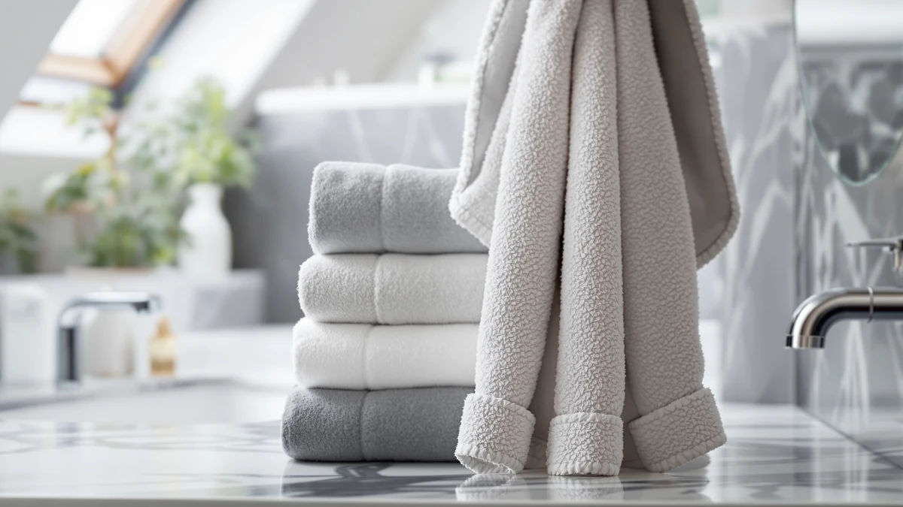

Best Baby Bath Towels with Hood (2026)
Prices and picks verified as of September 2026. Independent, reader-supported reviews.


Quick Answer
After comparing seven of the best baby bath towels with hood on the market, the HIPHOP PANDA bamboo towel is our pick for its snug corner hood and plush absorbency. It costs less than most cotton competitors while feeling softer against a newborn's skin.
Our pick: HIPHOP PANDA Hooded Towel - — $11.69 Check Price on Amazon
Bottom line: our top pick is the HIPHOP PANDA Hooded Towel - Rayon Made from Bamboo at $11.69. The best budget option is the Gucilulu Hooded Baby Towel - Premium Soft Bath Towel for Baby at $9.97.
Things to Know Before You Buy
- Hood fit matters more than fabric. The best baby bath towels with hood use a fitted corner hood that stays on a wet, moving head, while a loose triangle hood slides off the moment you lift your baby.
- Bamboo and cotton absorb differently. Bamboo towels feel plush and soak up more water per layer, while 100% cotton and muslin dry faster between washes but feel thinner.
- Size determines how long a towel lasts. A 28 or 30 inch towel fits a newborn well but gets tight by the first birthday, while a 32 to 35 inch towel buys another year of use.
- Multi-packs change the math. A $24.99 set with 11 washcloths is a different purchase than a $9.97 single towel, so compare the per-towel cost, not just the sticker price.
- Skip fabric softener on the first wash. It coats fibers and cuts absorbency, which defeats the point of a towel designed to dry a baby fast.
Finding the best baby bath towels with hood comes down to one moment: the ten seconds after bath time when your baby is wet, cold, and squirming, and a towel with a secure hood keeps the chill off a soft head. We compared seven hooded towels ranging from $9.97 to $24.99, looking at material, hood fit, and size, to see which ones actually hold up wash after wash. Owners of these towels report a wide range of experience, from towels that soften with every wash to ones that thin out fast, and price alone does not predict which is which.
Our top pick, the HIPHOP PANDA Hooded Towel, uses a bamboo weave that gets softer instead of scratchier after repeated washing, and its corner hood sits snug on a newborn's head without sliding off mid-wrap. At $11.69 it undercuts several cotton competitors while feeling plusher, though its 30x30 inch size means most babies outgrow it within a year. If you need more room to grow, the KeaBabies bamboo towel below runs a full 35x35 inches, and the Gucilulu is the cheapest option in this roundup at $9.97.
We narrowed the field to seven of the best baby bath towels with hood that appear across major retailers, then compared their materials, sizes, and hood construction side by side. Reviewers who bought these towels report what breaks down after a dozen washes and what still holds up, and we weighed that owner feedback alongside the specs each brand lists. What follows includes the honest drawbacks alongside what each towel does well.
Why You Should Trust Us
I'm Ilane Tall, and I cover bath and home textiles for Best Bath Towels, including the best baby bath towels with hood that new parents search for before a first child arrives. I have bathed and toweled off two kids under five myself, so a hood that slides off mid-wrap or a towel that turns thin after a dozen washes is not a hypothetical to me.
For this guide, I compared pricing, materials, and verified owner reviews for seven hooded towels rather than relying on brand marketing copy. When a towel underdelivers on hood fit or absorbency, I say so, and when a cheaper pick beats a pricier one, I say that too.
How We Picked
We started from the hooded baby bath towels that sell well on Amazon, then narrowed the list to seven that span the price range parents actually shop, from $9.97 to $24.99. We prioritized towels with a fitted or corner hood built for an infant's head rather than a scaled-down adult hood, and we favored listings with a meaningful number of verified reviews over newer products with thin review counts.
We passed on novelty character towels with weak stitching and any towel where the hood was more decorative than functional. The result is a spread of bamboo, cotton, and muslin options, including a multi-pack, so you can match material and size to your baby's age.
How We Compared
We compared the material, weight, and construction each brand lists, then cross-checked those claims against verified buyer reviews describing how each towel held up over repeated washing. Reviewers consistently flag two failure points for hooded baby towels: a hood that stretches out and stops gripping, and a fabric that goes stiff or thin after a dozen wash cycles, so we weighed feedback on both.
We also compared listed dimensions against the coverage a hood needs to fit a newborn versus an older infant, since a hood sized for a 6-month-old often gapes on a two-week-old baby. Prices and ratings reflect Amazon listings as of September 2026.
Our Picks

HIPHOP PANDA Hooded Towel -
What we like
- Fitted corner hood stays in place during a wriggly dry-off
- Bamboo weave feels plush and gets softer after repeated washing
- Priced under most cotton competitors at $11.69
Flaws but not dealbreakers
- At 30x30 inches, hood coverage gets tight within a year
- Bamboo holds moisture longer than muslin on a drying rack
| Material | Bamboo |
| Size | 30x30 Inch (Pack of 1) |
The HIPHOP PANDA earns its spot among the best baby bath towels with hood because it solves the hardest part of bath time: the ten seconds after you lift a wet, cold newborn out of the tub. The bamboo pile feels plush straight out of the package, and reviewers report it gets softer rather than scratchier after a handful of washes, a common failure point for cheaper cotton towels. The single-layer 30x30 inch towel pulls water off skin quickly, so you spend less time toweling and more time getting a chilly baby into a dry outfit.
The fitted corner hood is what separates this towel from flatter, triangle-cut competitors. It sits snug on a newborn's head instead of gaping at the edges, which matters most in the moment you lift and wrap a squirming baby. At $11.69 it undercuts several cotton rivals while feeling plusher against skin, though the 30x30 inch size means most babies outgrow full hood coverage within their first year, and owners note bamboo takes longer to air-dry than the muslin picks further down this list.

Gucilulu Hooded Baby Towel -
What we like
- Lowest price in this roundup at $9.97
- Large hood shape covers more of a baby's head and ears than smaller corner hoods
- Cotton blend dries faster between baths than bamboo
Flaws but not dealbreakers
- Reviewers describe the cotton blend as thinner than the bamboo picks here
- Fewer color and print options than pricier competitors
| Material | Cotton blend |
| Size | Large |
At $9.97, the Gucilulu is the least expensive of the best baby bath towels with hood we compared, and it does not cut the one feature that matters most: hood coverage. The hood is cut large enough to cover a baby's ears and the back of the neck, not just the crown of the head, which reviewers say makes it easier to keep a newborn warm through a full wrap. The cotton blend construction absorbs less per layer than bamboo, but it also dries faster between uses, a real advantage if you only own one or two towels in rotation.
Owners consistently describe the fabric as noticeably thinner than the bamboo options in this guide, which shows up most after a year or two of regular washing. That thinness keeps the price down and the towel light, so it is a reasonable trade for parents buying a first towel or building a stash of backups rather than a single splurge purchase. If softness against sensitive skin is the priority, the HIPHOP PANDA above justifies its higher price; if the goal is the lowest cost per towel, the Gucilulu covers the basics well.

Yoofoss Hooded Baby Towels for
What we like
- 100% cotton construction with no synthetic blend
- 32x32 inch size covers an older infant better than 30-inch towels
- Wide hood opening slides over wet hair easily
Flaws but not dealbreakers
- Costs more than the smaller bamboo and blend towels in this list
- 100% cotton dries slower on a rack than bamboo or muslin
| Material | 100% cotton |
| Size | 32 x 32 Inch |
The Yoofoss trades bamboo's plush feel for straightforward 100% cotton, and at 32x32 inches it runs larger than the 30-inch towels near the top of this list. That extra size means the hood keeps covering a baby's head well past the newborn stage, which reviewers cite as the reason they picked it over smaller towels that fit for only a few months. The wide hood opening also makes it simple to pull over hair that is already wet and matted from the bath, rather than fighting a tight, narrow opening.
At $17.99 it costs more than the bamboo and blended options above, and 100% cotton takes longer to dry fully between washes than bamboo or the muslin pick later in this guide, so a household doing daily baths may want a second towel in rotation. For parents who want to avoid blended fabrics on a baby's skin and do not mind paying a bit more for it, the Yoofoss is a straightforward pick among the best baby bath towels with hood on the market.

KeaBabies Hooded Baby Towel for
What we like
- 35x35 inch size fits toddlers, not just newborns
- Bamboo fiber stays soft over repeated washes, per reviewers
- Hood covers ears and the back of the neck on a bigger head
Flaws but not dealbreakers
- Pricier than the smaller hooded towels in this roundup
- Bulkier to pack in a diaper bag than a 30-inch towel
| Material | Bamboo |
| Size | Regular 35x35 |
The KeaBabies towel takes the bamboo softness that makes the HIPHOP PANDA our top pick and scales it up to 35x35 inches, big enough to still wrap comfortably around a toddler rather than just a newborn. Reviewers who bought it for older babies note the hood keeps covering the ears and neck long after smaller towels have started riding up, which extends the useful life of a single towel by a year or more.
That extra fabric pushes the price to $18.96, the second-highest in this comparison, and the towel takes up noticeably more room in a diaper bag or on a hook than the compact 28 to 30 inch options. If your baby is already six months or older, or you want one towel to last well into toddlerhood instead of replacing it, the larger size justifies the higher cost over buying two smaller towels back to back.

Momcozy Baby Towel with Hooded
What we like
- 28x28 inch size is easy to manage one-handed with a newborn
- Cotton blend feels gentle against sensitive newborn skin, reviewers say
- Hood is proportioned for a small head rather than a scaled-down adult hood
Flaws but not dealbreakers
- Newborns outgrow the 28-inch size faster than the larger towels here
- Costs more than towels with a similar cotton blend and size
| Material | Cotton blend |
| Size | Newborn Bath Towel ( 28 X 28 Inch ) |
Most hooded baby towels are just smaller versions of an adult towel, but the Momcozy is cut at 28x28 inches specifically for the newborn stage, and reviewers say that sizing makes it easier to wrap and hold a small, wet baby with one arm while drying with the other. The cotton blend fabric is described as gentle against sensitive newborn skin, and the hood is proportioned to actually fit a small head rather than pooling extra fabric around the ears the way an oversized hood does.
The tradeoff is longevity. At 28x28 inches, this towel fits the newborn to early infant window better than any other towel in this comparison, but babies grow out of that window faster than they would with a 32 or 35-inch towel. At $20.39 it also costs more than towels of a similar cotton blend and size, so it makes the most sense as a first towel bought specifically for the newborn months rather than a towel meant to last for years.

Blissful Diary Muslin Baby Hooded
What we like
- Two towels per pack means a dry one is always ready
- Muslin weave is lighter and packs smaller than bamboo or terry cotton
- Reviewers note it dries faster on a hook between baths
Flaws but not dealbreakers
- Muslin absorbs less per layer than bamboo or thick cotton
- Loose weave shows wear sooner with daily use, per some owners
| Material | Cotton blend |
| Size | 2 Pack |
The Blissful Diary set skips the plush, heavy feel of bamboo for a lighter muslin weave, sold as a two-pack for $22.99. Having two towels solves a real problem with single-towel purchases: one is always drying while the other is in use, so you are never stuck reaching for a damp towel after an evening bath. Muslin also packs down small, which reviewers mention makes it a practical choice for travel or overnight stays with a baby.
Muslin's looser weave means it absorbs less water per layer than the bamboo or thick cotton towels earlier in this guide, so drying takes a bit more toweling motion rather than one quick pass. Some owners report the weave starts to thin and show wear sooner than tighter-knit towels when used daily rather than occasionally. For parents who value a fast-drying, packable towel and like having a backup built into the purchase, the two-pack format offsets the lighter absorbency.

CandyHome 12 PCS Baby Bath
What we like
- Includes 11 matching washcloths alongside the hooded towel
- 31.5x31.5 inch size covers most infants through the toddler years
- One order covers both towel and washcloth needs
Flaws but not dealbreakers
- Only one hooded towel is included despite the 12-piece count
- Highest price in this comparison at $24.99
| Material | Cotton blend |
| Size | 31.5x31.5in |
The CandyHome set is the highest-priced option in this comparison at $24.99, and the 12-piece count is a little misleading if you are shopping for multiple hooded towels: the set includes one 31.5x31.5 inch hooded towel and 11 coordinating washcloths, not a dozen towels. For parents who need washcloths anyway, though, bundling them with a properly sized hooded towel in a single order is a genuine convenience over buying the two separately.
The towel itself is sized generously enough to cover an infant well into the toddler years, putting it in the same size range as the KeaBabies bamboo towel above. If your priority is stocking a full bath kit in one purchase rather than owning several backup towels, the CandyHome set covers more bases per order than any single towel in this guide, even though it delivers only one towel where the packaging might suggest more.
Quick Comparison
| Product | Material | Price | Rating | Best for | Get it |
|---|---|---|---|---|---|
| HIPHOP PANDA Hooded Towel - | Bamboo | $11.69 | 4 | Newborns, snug hood fit | View on Amazon → |
| Gucilulu Hooded Baby Towel - | Cotton blend | $9.97 | 4 | Lowest price, roomy hood | View on Amazon → |
| Yoofoss Hooded Baby Towels for | 100% cotton | $17.99 | 4 | 100% cotton, wider coverage | View on Amazon → |
| KeaBabies Hooded Baby Towel for | Bamboo | $18.96 | 4 | Larger bamboo, grows with baby | View on Amazon → |
| Momcozy Baby Towel with Hooded | Cotton blend | $20.39 | 4 | Newborn-specific compact size | View on Amazon → |
| Blissful Diary Muslin Baby Hooded | Cotton blend | $22.99 | 4 | Muslin two-pack value | View on Amazon → |
| CandyHome 12 PCS Baby Bath | Cotton blend | $24.99 | 4 | Bundle: towel plus washcloths | View on Amazon → |
What size baby bath towel with hood should I buy for a newborn?
For a newborn, a 28 to 30 inch hooded towel such as the Momcozy or HIPHOP PANDA gives enough coverage without extra fabric to manage one-handed.
Is bamboo or cotton better for a baby bath towel with hood?
Bamboo towels like the HIPHOP PANDA and KeaBabies feel plusher and absorb more water per layer, and reviewers report they soften rather than stiffen with washing.
The Competition
Several hooded towels did not make this list. We passed on novelty character towels with fun prints but flimsy, single-stitched hoods that reviewers describe as sliding off within the first few washes, since a hood that will not stay put defeats the purpose of buying one in the first place. Ultra-cheap unbranded two-packs under $8 came up too, but owner reviews consistently flag thin fabric and lint shedding after only a handful of washes.
We also left off adult-sized hooded towels marketed for babies, since their weight and bulk swamp a newborn rather than wrapping them. A few additional bamboo towels looked appealing on spec sheets but turned out to be near-identical repeats of our top pick at a higher price, with no material difference to justify the extra cost.
Among the best baby bath towels with hood we compared, the HIPHOP PANDA stays our pick: soft bamboo, a hood that actually holds its position, and a price that undercuts most of its cotton rivals.
Frequently Asked Questions
What size baby bath towel with hood should I buy for a newborn?
For a newborn, a 28 to 30 inch hooded towel such as the Momcozy or HIPHOP PANDA gives enough coverage without extra fabric to manage one-handed. If you want a towel that lasts past the first birthday, size up to a 32 to 35 inch option such as the Yoofoss or KeaBabies.
Is bamboo or cotton better for a baby bath towel with hood?
Bamboo towels like the HIPHOP PANDA and KeaBabies feel plusher and absorb more water per layer, and reviewers report they soften rather than stiffen with washing. Cotton and muslin towels dry faster between baths and pack lighter, but they generally absorb less per layer than bamboo.
How many hooded baby bath towels do I need?
Most parents get by with two to three hooded towels in rotation, since a wet towel needs time to fully dry before its next use. A two-pack such as the Blissful Diary set covers backup needs in a single purchase.
Do hooded towels actually keep a baby warmer than a regular towel?
Yes. Babies lose a disproportionate amount of body heat through the head, and a hood that fits snugly covers it the moment you lift your baby from the tub. A fitted corner hood, like the one on our top pick, holds its position better than a loose triangle flap that slides off during the wrap.